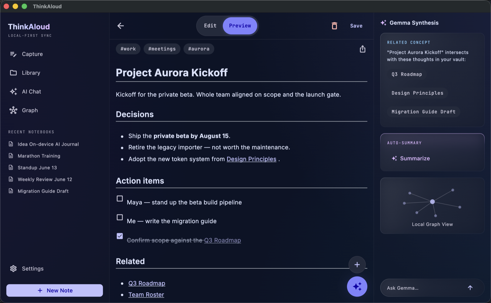

Talk. It writes the note.
ThinkAloud turns spoken thoughts, photos, and long recordings into clean Markdown notes — with AI that runs entirely on your device.
No cloud processing. No subscription. No account. Your notes are plain files in a folder you control, and the model that writes them never sees the internet.
The Android APK, Windows installer, and macOS app are direct downloads you install yourself · 64-bit Android ~199 MB · Windows 10/11 64-bit ~92 MB · macOS 10.15+ universal ~97 MB. On iPhone & iPad, get it from the App Store.



From rambling to readable in three steps
Record anything
A ten-second thought, a whiteboard photo, or a two-hour lecture. Pick a note style first — Journal, Meeting, Idea, or your own.
The AI writes — on your device
Google's Gemma model, running locally, transcribes and structures it: a real title, topic tags, headings, checklists where they belong.
It files itself
The note lands as plain Markdown in your vault and links itself to the related notes you already have. The graph grows on its own.
A complete thinking tool, not just a recorder
Voice-first capture
Short thoughts or hour-long lectures both come out as structured notes in your chosen style — and you review every take before the AI writes, so a bad recording costs nothing. Long recordings keep a timestamped transcript and the original audio.
Ask your vault
Question your own notes conversationally — by typing or speaking. Answers cite their sources: tap a chip to open the note an answer came from.
Photos become notes
Point the camera at a whiteboard, a document, or a slide and get a written, searchable note.
Plain files, your folder
Notes are Markdown in an Obsidian-compatible vault. Open them with any editor, point the app at an existing vault, or let it manage its own.
Notes that find each other
Every capture is linked to the related notes you already have — exact-title wikilinks the app verifies, never invented ones. That's what builds the knowledge graph.
Sync to your cloud, optionally
Google Drive or iCloud — strictly your account, in a private folder the app created. We run no servers at all.
See every feature with screenshots →
Private by architecture
No analytics. No telemetry. No ads. No accounts. The developer operates no servers and receives no user data — there is nothing to leak, sell, or subpoena. Read the privacy policy.
What's new in 1.0.4
Everything still runs 100% on your device — your notes and audio never leave it.
- More accurate links & search — a new hybrid keyword +
on-device semantic engine surfaces the right notes for Related links,
[[wikilinks]], and search. - Think mode for deeper, step-by-step reasoning, plus a live model picker matched to your device's RAM and chip — including the latest Gemma.
- Review recordings before processing, with a clearer stop control and the screen staying awake while you record.
- Pin and share notes; a reviewable “replace all” you approve before it's applied.
- Use any folder as your vault on Android — Obsidian-compatible, with no special storage permissions.
- Reliability & accessibility — many rare data-loss edge cases fixed, plus a thorough screen-reader, large-text, reduced-motion, and touch-target pass.
Buy me a coffee
ThinkAloud has no subscriptions, no ads, and no servers to keep running — so there's no donate button either. If it earned a spot on your home screen and our paths ever cross, buy me a coffee in person. That's the whole business model.
Say hello →